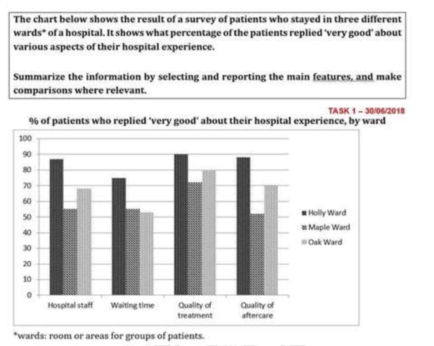

Article
Read the article, then confirm below to continue.
Does Santa change child behaviour?
You might expect a child's belief in Father Christmas — with his ability to know if kids have been good — would affect the way they act. But other festive rituals may play a bigger role, says Michael Marshall.
📄 Open articleComprehension & vocab
Questions on the article you just read, plus ten key words from it.
Comprehension
1. According to the article, what question was Rohan Kapitány and his team originally trying to answer?
2. According to the article, what did parents' reports show about children's overall behaviour between the two interview points?
3. According to the article, what did the researchers find was actually linked to more prompted prosocial behaviour?
4. According to the article, how does Kapitány explain why it can be "rational" for a child to believe in Santa?
5. According to the article, why is Jane Risen more cautious about the link between Christmas rituals and children's behaviour?
6. According to the article, what does Kapitány say a person's social context predicts better than their beliefs?
Vocabulary
Writing Task 1: the article
Background reading on hospital patient satisfaction — study the highlighted language before you write.
■ subject synonyms ■ useful Task 1 chunks
Patient Satisfaction Metrics: Institutional Service Quality and Care Perception Dynamics
Evaluating patient satisfaction across specialized inpatient units provides critical benchmark data for hospital administration and healthcare quality assurance. Analyzing service satisfaction rates across discrete operational departments — evaluating staff competence, administrative wait times, treatment quality, and post-discharge aftercare — reveals key operational strengths and structural variances in clinical service delivery.
Departmental Performance Trajectories
Patient satisfaction metrics demonstrate significant variation depending on the clinical environment and specific point of care:
Dominance of High-Performing Clinical Units: Premium inpatient departments consistently achieve top-tier satisfaction ratings across all evaluation criteria. Staff responsiveness, medical intervention, and follow-up care within these high-performing units receive near-universal approval, serving as the benchmark for institutional care standards.
Universal Prioritization of Treatment Quality: Clinical outcomes and the core quality of medical treatment consistently receive the highest approval marks across all departments. Regardless of overall unit rating, clinical competence remains the primary driver of positive patient feedback compared to administrative or secondary metrics.
Divergence in Aftercare and Staff Interactions: Secondary care metrics — such as routine staff engagement and post-discharge support — exhibit the widest performance gap among different wards. While top-tier departments maintain strong continuity of care, lower-performing units experience a noticeable drop-off in approval ratings for post-treatment follow-up and staff attention.
Systemic Challenges in Administrative Waiting Times: Operational efficiency regarding intake and wait times represents a persistent bottleneck across most specialized units. Approval ratings for waiting times frequently lag behind direct care metrics, reflecting broader structural delays in admission and triage procedures.
Task 1 report
Mini exam block — write your response with the stopwatch running.
The chart below shows the results of a survey of patients who stayed in three different wards of a hospital. It shows what percentage of the patients replied "very good" about various aspects of their hospital experience. Summarize the information by selecting and reporting the main features, and make comparisons where relevant. Write at least 150 words.

Sample answer
Model response, with useful comparison language marked.
The bar chart compares the percentage of patients who rated four aspects of their hospital stay as "very good" across three different wards: Holly, Maple, and Oak.
Overall, Holly Ward consistently received the highest approval across all categories, particularly in quality of treatment and aftercare, whilst Maple Ward recorded the lowest ratings in most aspects. "Quality of treatment" stood out as the best-rated factor in each ward, whereas "Waiting time" attracted the fewest positive responses overall.
In Holly Ward, evaluations were exceptionally positive, with 90% rating the quality of treatment and nearly the same proportion praising aftercare. Staff performance and waiting time also received strong endorsements, at approximately 87% and 75% respectively.
Oak displayed a somewhat similar pattern, though with slightly lower ratings overall. 80% of patients were pleased with treatment quality, compared to only 70% who gave high marks to aftercare. Staff were rated very good by about 68%, and waiting time received the weakest result, just slightly over 50%.
In contrast, Maple Ward was rated more modestly. Roughly 70% of respondents were satisfied with treatment, and about 55% rated other aspects, such as staff and waiting time, very good. The lowest score was recorded for aftercare, with only around 52% of patients rating it "very good".
Reading Practice
Open the test in a new tab, complete it, then come back here.
Speaking Part 2 & 3
Choose a topic set below. You only get one attempt per question, so make sure you're ready before you start recording.
Video & comprehension
Watch, then answer the questions below.
1. What is the main topic of the video?
2. What is the first stage in the process of forming a memory?
3. Which part of the brain helps consolidate sensory experiences into lasting memories?
4. What is the role of the amygdala in memory formation, according to the video?
5. How can moderate stress affect memory formation?
6. When does moderate stress appear to have a positive effect on memory?
7. What can long-term or chronic stress do to the hippocampus?
8. Why can stress make a person's mind go blank during a test?
9. Why is practising under conditions similar to a real test recommended?
10. What does the video recommend doing when your mind goes blank during an important moment?
Gap Fill
Word box: acquisition · hippocampus · amygdala · encoded · retrieval · moderate · corticosteroids · chronic · prefrontal · inhibits · vicious · novelty · exercise · anxiety · ataraxia
1. The first stage of forming a memory is called .
2. Sensory experiences must be consolidated by the to become lasting memories.
3. The emphasizes experiences connected with strong emotions.
4. Once a memory has been , it can be remembered later.
5. The process of remembering stored information is known as .
6. stress can sometimes help experiences enter our memory.
7. Stress causes the body to release hormones called .
8. Extreme and stress can have negative effects on memory.
9. The cortex is important for thought, attention, reasoning, and remembering.
10. During a stressful situation, the amygdala can the activity of the prefrontal cortex.
11. Trying unsuccessfully to remember something can create a cycle of stress.
12. A new or unfamiliar situation can cause stress because itself can be a stressor.
13. Regular can help reduce anxiety and improve wellbeing.
14. Deep breathing exercises have been shown to reduce test .
15. The word ataraxia means a state of calmness free from .
Vocabulary Matching
Day 20 complete! 🎉
All 8 tasks done. Come back tomorrow for the next day.